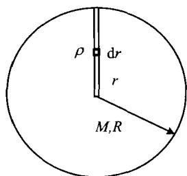

恒星演化的晚期，当中心核的核反应停止之后，就会经引力坍缩而形成致密的天体，通常称为致密星。我们在上一章中讨论过的白矮星、中子星以及黑洞，都属于致密星。顾名思义，致密星应当是体积小、密度大的天体。的确，白矮星的物质密度可达 10^{5} \sim 10^{9} \mathrm{~g/cm}^{3} ，中子星的物质密度甚至高达 10^{14} \sim 10^{15} \mathrm{~g/cm}^{3} 。但实际上，密度只是衡量星体是否致密的重要参数之一，并不是决定性的参数。从本质上讲，致密星最根本的特点是其表面的引力场非常强，以至于广义相对论效应不可忽略。引力场的强弱通常用一个参数来表征，即表4.1中最后一列所示的引力强度参数 2GM / Rc^2 ，其中 M, R 分别为星体的质量和半径， G 为万有引力常数，后面我们将分析这一参数的具体含义。从表中可以看出，从普通天体（地球、太阳）到白矮星和中子星，参数 2GM / Rc^2 越大，天体的密度也越大；而对于黑洞就不是这样了。下面我们会看到，所有的黑洞都有 2GM / Rc^2 \sim 1 ，但密度可以千差万别。一个星体在引力坍缩后将形成哪种致密星，主要取决于它的质量。例如，白矮星的最大质量约 1.4M_{\odot} ，中子星约 2M_{\odot} （基于不同物态方程并考虑转动时最大可达 \sim 3M_{\odot} ），比这质量更大的天体，坍缩后只能形成黑洞。
表 4.1 典型天体的密度与表面引力场强度
| 天体名称 | 平均密度(g/cm3) | 引力强度参数(2GM/Rc2) |
|---|---|---|
| 地球 | 5 | 10^{-8} |
| 太阳 | 1 | 10^{-6} |
| 白矮星 | \sim 10^{6} | \sim 10^{-4} |
| 中子星 | \sim 10^{14} | \sim 10^{-1} |
| 黑洞 | 1 |
第一颗被发现的白矮星是天狼伴星，它是德国天文学家兼数学家贝塞尔(F.Bessel)研究天狼星轨道运动时，于1844年用天体力学的方法计算出来的。贝塞尔经过长达10年的精密观测发现，天狼星在天空的“螺旋式”运动实际上是双星的轨道运动，因而推测它应当有一颗伴星。他计算出这颗伴星的质量应与太阳相当，轨道运动周期为50年（现代准确值为49.9年），但由于太暗当时人们看不到它。1862年，美国光学家克拉克(A.Clark)父子用当时世界最大的18英寸反射式望远镜，终于拍到了天狼伴星的照片，发现它的亮度只有天狼星的千分之一。1915年亚当斯(W.Adams)拍到了它的光谱，得知其是一颗蓝白色热星，大部分辐射能量在紫外波段。现在知道，天狼伴星的质量是 1.053M_{\odot} ，光度为 L_{\odot} 的1/360。半径很小，约5500km( \approx0.008R_{\odot} )。比地球还要小一些，平均密度达 3.0\times10^{6}g/cm^{3} 。表面温度为27000K，大大高于天狼星的9910K。所以在赫罗图上，天狼伴星应位于白矮星的位置。由上一章的讨论我们知道，白矮星是中、小质量恒星最后演化阶段的产物，由此估计在银河系中应当有大约100亿颗。但由于它们实在太小，很不容易观测到，目前已发现的白矮星只有数千颗，其中很多伴随有绚丽的行星状星云。
白矮星内部已不再有核反应,故没有能量继续产生,此时与引力抗衡的只有简并电子的压力。上一章(3.3节)讨论过,简并电子在非相对论性和相对论性的情况下,物态方程是不同的。我们先来估计一下,电子由非相对论性转变为相对论性时,相应的物质密度大约是多少。上一章(3.64)给出了费米动量 p_{F} 与电子数密度之间的关系,即
n _ {\mathrm{e}} = \frac {N _ {\mathrm{e}}}{V} = \frac {8 \pi}{3 h ^ {3}} p _ {\mathrm{F}} ^ {3}\tag{4.1}
而电子数密度与物质密度的关系可以写成
n _ {\mathrm{c}} = \frac {\rho}{m _ {\mathrm{p}} \mu_ {\mathrm{c}}}\tag{4.2}
其中 m_{p} 是质子的质量， \mu_{e} 是每一电子对应的平均核子数，注意这里的 \mu_{e} 与通常平均分子量 \mu 的意义不同。如果用元素丰度来表示，把(4.2)与(3.74)相比较，马上可以看到
\mu_ {\mathrm{e}} = \frac {1}{X + \frac {1}{2} Y + \frac {1}{2} Z} \simeq \frac {2}{1 + X}\tag{4.3}
最后一步近似是忽略了重元素丰度的结果。在一般情况下，如物质完全电离且绝大部分质量由单一原子贡献， \mu_{\mathrm{e}} = A / Z （这里的 A 代表原子量， Z 代表元素的原子序数）。由此可见，如星体物质完全由氢组成 (X = 1) ，则 \mu_{\mathrm{e}} = 1 ；如完全由重元素组成 (Z = 1) ，并近似地认为，核子中质子与中子各占一半，则由于电子数与质子数相等，因而有 \mu_{\mathrm{e}} \approx 2 。于是，由(4.1)并设 p_{F} \approx m_{\mathrm{e}} c （相应于电子从非相对论性到相对论性的转变），可以得到
n _ {\mathrm{e}} \approx \frac {8 \pi}{3} \left(\frac {m _ {\mathrm{e}} c}{h}\right) ^ {3} \approx 1 0 ^ {3 0} / \mathrm{cm} ^ {3}\tag{4.4}
再由(4.2)得
\rho \approx m _ {\mathrm{p}} \mu_ {\mathrm{e}} n _ {\mathrm{e}} \approx 1 0 ^ {6} \mu_ {\mathrm{e}} \mathrm{g/cm} ^ {3}\tag{4.5}
这样，当中心密度 \rho_{c}<10^{6} g/cm ^{3} 时，白矮星的电子是非相对论性简并的（p<mc），此时的电子简并压（见(3.75)式）可以表示为
P _ {\mathrm{e}} = \frac {h ^ {2}}{2 0 m _ {\mathrm{c}}} \left(\frac {3}{\pi}\right) ^ {2 / 3} \left(\frac {\rho}{m _ {\mathrm{p}} \mu_ {\mathrm{e}}}\right) ^ {5 / 3} \simeq 1. 0 \times 1 0 ^ {1 3} \left(\frac {\rho}{\mu_ {\mathrm{e}}}\right) ^ {5 / 3} \mathrm{dyn} \mathrm{cm} ^ {- 2}\tag{4.6}
而当 \rho_{c}>10^{6} g/cm ^{3} ，电子是相对论性简并的，即 p>mc，此时(3.76)式给出
P _ {\mathrm{c}} = \frac {h c}{8} \left(\frac {3}{\pi}\right) ^ {1 / 3} \left(\frac {\rho}{m _ {\mathrm{p}} \mu_ {\mathrm{c}}}\right) ^ {4 / 3} \simeq 1. 2 \times 1 0 ^ {1 5} \left(\frac {\rho}{\mu_ {\mathrm{c}}}\right) ^ {4 / 3} \mathrm{dyncm} ^ {- 2}\tag{4.7}

图 4.1 估计白矮星利用物态方程(4.6)和(4.7)，以及有关的恒星结构方程，就可以通过数值积分，求出白矮星的内部结构，例如密度和质量的分布，质量与半径的关系，以及总质量的大小等。这里我们不去进行这样的仔细计算，而只运用半定量的分析方法，对白矮星的质量上限做一个估计。我们假设星体的密度是常量，不随半径而变。在静力学平衡情况下，星体中心处的重力应与简并电子压相等。如图4.1所示，一个长度为 R ，截面为单位面积的圆柱体，所受到的总重力是
质量上限的简图
P _ {g} = \int_ {0} ^ {R} \rho g \mathrm{d} r = \int_ {0} ^ {R} \rho \cdot G \cdot \frac {4 \pi}{3} \frac {r ^ {3}}{r ^ {2}} \rho \mathrm{d} r = \frac {4 \pi}{3} G \rho^ {2} \cdot \frac {1}{2} R ^ {2}\tag{4.8}
其中
R = \left(\frac {M}{4 \pi \rho / 3}\right) ^ {1 / 3}\tag{4.9}
故
P _ {g} = \frac {2 \pi}{3} G \rho^ {2} \left(\frac {M}{4 \pi \rho / 3}\right) ^ {2 / 3} = \frac {2 \pi}{3} \left(\frac {3}{4 \pi}\right) ^ {2 / 3} G \rho^ {4 / 3} M ^ {2 / 3}\tag{4.10}
现考虑电子相对论性简并的情况。利用(4.7)给出的电子简并压 P_{e} ，且使其与重力相平衡，即 P_{e}=P_{g} ，则有
\frac {h c}{8} \left(\frac {3}{\pi}\right) ^ {1 / 3} \left(\frac {1}{m _ {\mathrm{p}} \mu_ {\mathrm{c}}}\right) ^ {4 / 3} = \frac {2 \pi}{3} \left(\frac {3}{4 \pi}\right) ^ {2 / 3} G M ^ {2 / 3}\tag{4.11}
由此得到
M \simeq \frac {3}{1 6 \pi} \left[ \frac {h c}{G (m _ {\mathrm{p}} \mu_ {\mathrm{e}}) ^ {4 / 3}} \right] ^ {3 / 2} \simeq 1. 8 \times \left(\frac {1}{\mu_ {\mathrm{e}}}\right) ^ {2} M _ {\odot}\tag{4.12}
可见除了一个数字系数和与化学组成有关的因子 \mu_{\mathrm{e}} 外，白矮星的最大质量可以表示为一些基本物理学常数的组合。当然，我们上面的讨论过于简化，实际星体的密度分布不会是均匀的。1931年钱德拉塞卡经严格理论计算给出，白矮星的质量上限应当为
\left| M _ {\mathrm{ch}} \simeq \frac {5 . 8}{\mu_ {\mathrm{e}} ^ {2}} M _ {\odot} \simeq 1. 4 \left(\frac {2}{\mu_ {\mathrm{e}}}\right) ^ {2} M _ {\odot} \right|\tag{4.13}
白矮星的星体成分中几乎没有氢，主要是氦或者碳和氧，因此近似有 \mu_{\mathrm{e}} \approx 2 ，故这一质量上限约为 M_{\mathrm{ch}} \simeq 1.4M_{\odot} ，即钱德拉塞卡极限。由此以及(4.5)，可得白矮星的半径约为
R = \left(\frac {3 M _ {\mathrm{ch}}}{4 \pi \rho}\right) ^ {1. 3} \approx 1 0 ^ {4} \mathrm{km}\tag{4.14}
即大小与地球相仿。钱德拉塞卡发表他的计算结果后，当时曾引起过一场激烈的争论。爱丁顿就曾把这一结果斥之为荒谬，因为这样一来，那些质量远大于太阳的恒星，其演化结果就不得而知了。但现在我们知道，钱德拉塞卡是对的，质量高达 8M_{\odot} 的恒星仍然可以形成白矮星，因为超过钱德拉塞卡极限的那些多余质量，都以星风或物质抛射的形式丢掉了。质量大于 8M_{\odot} 的恒星，在抛掉外层物质后将形成中子星或黑洞。
新形成的白矮星内部温度高达 10^{8}\mathrm{K} ，这一温度在通常概念下已是非常高的温度，但比起简并温度来仍然属于低温。简并温度 T_{\mathrm{F}} 的定义是
T _ {\mathrm{F}} = \frac {E _ {\mathrm{F}}}{k} = \frac {p _ {\mathrm{F}} ^ {2}}{2 m _ {\mathrm{c}} k}\tag{4.15}
其中 E_{F} 称为费米能量， p_{F} 为费米动量。利用(3.64)的 p_{F} 与电子密度 n_{e} 的关系，可得
T _ {\mathrm{F}} = \frac {1}{8} \left(\frac {3}{\pi}\right) ^ {2 / 3} \frac {h ^ {2}}{m _ {\mathrm{e}} k} n _ {\mathrm{e}} ^ {2 / 3} \simeq 4. 3 \times 1 0 ^ {- 1 1} n _ {\mathrm{e}} ^ {2 / 3} \mathrm{K}\tag{4.16}
代入(4.4)给出的 n_{c} \approx 10^{30}/cm^{3} 的值，得到简并温度为 T_{F} \approx 4 \times 10^{9} K 。因而白矮星内部虽然达到 10^{8} K 的高温，但仍远低于 T_{F} ，故在这样的温度下，电子简并压的作用仍远远超过热压力。另一方面，简并电子的导热性非常强，使得白矮星内部就像金属一样，可以看成是一个等温的球体。顺便提到，金属的硬度也是由简并电子的压力所造成的，金属的正离子按晶格点阵排列，它们靠许多共有的电子结合在一起。泡利不相容原理导致这些共有电子处于比正常温度下更高的能态。
除了占总体积绝大部分的等温内核外，白矮星还有一个薄的表层或外壳，其温度范围从 5000\mathrm{K} 到 80000\mathrm{K} ，密度小于 10^{2}\mathrm{g/cm}^{3} 。这样一个外壳的厚度大约几公里，是由非简并的理想气体组成的。对大多数白矮星来说，外壳中的气体主要是氢。虽然白矮星的表面温度比太阳还要高，但由于表面积太小，总光度也就很低，因而它们就像茫茫太空中的神秘幽灵，很难被我们发现。同时，在非简并的气体外壳中，能量的传递主要靠辐射和对流来实现，但辐射和对流传热的效率远远小于内部简并电子的热传导。这样一来，外壳的存在大大减少了内部热量向外的散失，从而大大减缓了白矮星的冷却过程，使白矮星的演化变得很慢。
但终究，由于没有了内部核反应，向外辐射的能量只能依靠消耗自身的热能，因此白矮星将逐渐冷却变暗。最后所有原子核的热运动几近停止，星体内部成为一种像晶格那样的结构，只有简并电子继续在晶格之间自由运动。这一过程可能会持续几十亿、甚至上百亿年的时间。当白矮星最终停止一切辐射时，就变成一颗冷暗的、地球尺度的巨大晶体，其硬度甚至超过钻石，这就是黑矮星。当然，这是白矮星为单星时的演化结果。如果白矮星是与另一颗伴星结成密近双星，其后来的演化就取决于白矮星对伴星物质的吸积，演化的可能结果上一章已经做了讨论。